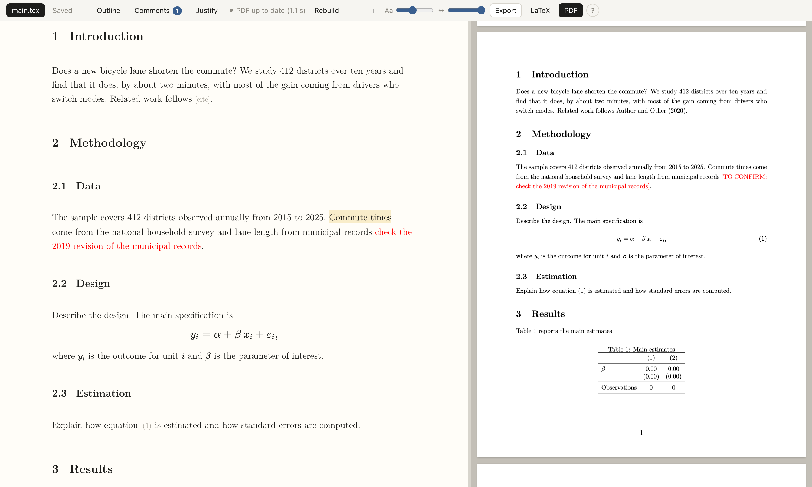

ltx
A local browser editor for LaTeX papers that you and Claude Code can edit at the same time.

Why
When Claude Code edits a .tex file while you have it open in an editor, one of you loses work: the editor reloads over your typing, or your save overwrites the edit. ltx treats the file on disk as the shared document. Your keystrokes stay local and are saved as small patches; edits that arrive from outside are merged into the open buffer within about a second, around whatever you have typed. You keep working in the browser, Claude keeps working in the terminal, and the PDF rebuilds in the background.
Features
- Source buffer (CodeMirror 6) in an economics-paper look: Latin Modern type, one paragraph per line, section numbers, citation and reference chips, KaTeX math and HTML tables when the LaTeX view is off.
- Surgical saves: opening and saving without changes writes zero bytes; changing one word changes one line.
- Live merging of external edits. If you both touch the same characters, the file on disk wins and your replaced text is shown so you can re-insert it.
- Background PDF with tectonic, errors explained in plain words, last good PDF kept on screen.
- Selection, comments and suggestions written to
.ltxed/next to the paper, where Claude Code reads them. Lines that change on disk flash briefly, so you see what Claude just edited. - Outline with word counts per section, a comments list with an open-comment badge, find and replace (
Cmd+F), andCmd+Jto show the cursor’s place in the PDF (double-click the PDF to go back). - A « ? » button in the toolbar explains every button, key and colour.
- Multi-file papers, appendix numbering across files. Everything runs on
127.0.0.1.
Install
Needs Python 3.11+, uv and tectonic.
brew install tectonic
uv tool install git+https://github.com/danieldager/ltxTo try it without installing: uvx --from git+https://github.com/danieldager/ltx ltx --help.
Use
ltx new paper/ # main.tex and references.bib from a template
ltx open paper/main.tex # start the server, open the browser
ltx stop paper/ # stop the server for that folderUse with Claude Code
Install the skill once with ltx setup-claude (it writes ~/.claude/skills/ltx/SKILL.md; --uninstall removes it). With a paper open, talk to Claude Code in the terminal as usual. It reads these files:
| File | Use |
|---|---|
selection.json | “rewrite this paragraph”: the text you have selected |
comments.json | select text, add a comment, say “do the comments”; Claude sets status and reply |
suggestions.json | edits Claude proposes; you accept, reject or discuss each in the editor |
compile_errors.json | “fix the build” |
To have Claude pick up comments as you write them, ask it to monitor with Claude Code’s Monitor tool and this command:
ltx watch paper/main.texIt prints one line per newly opened comment and nothing otherwise, so each line wakes Claude, which applies the comment and goes back to waiting.
Status
A personal tool, tested on macOS only. No CRLF or BOM handling; files must be UTF-8 with LF line endings. Undefined reference warnings are not linked to a file. See the README for the full list.